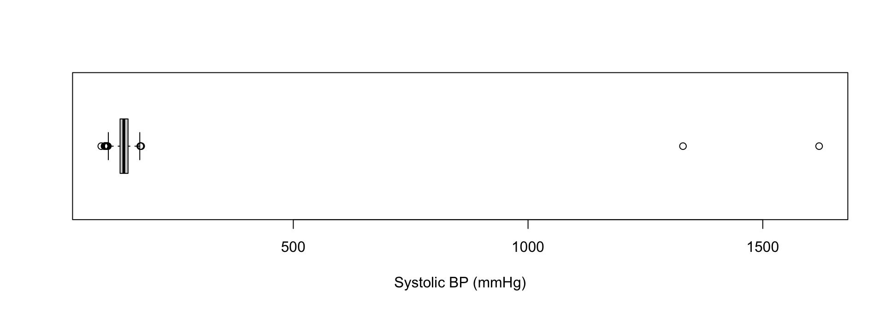
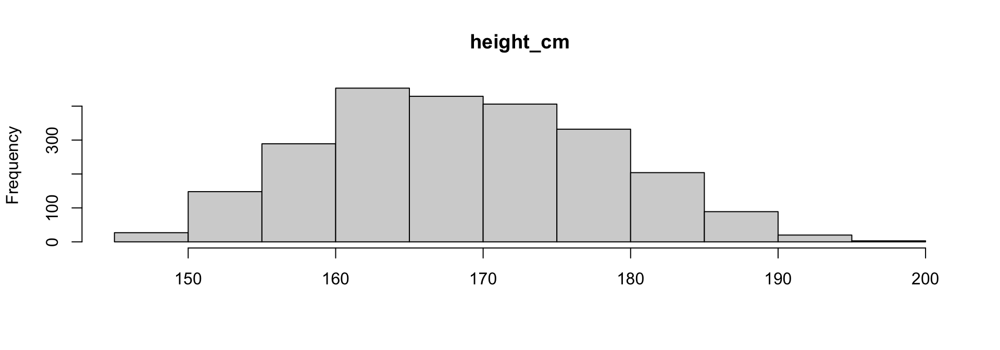
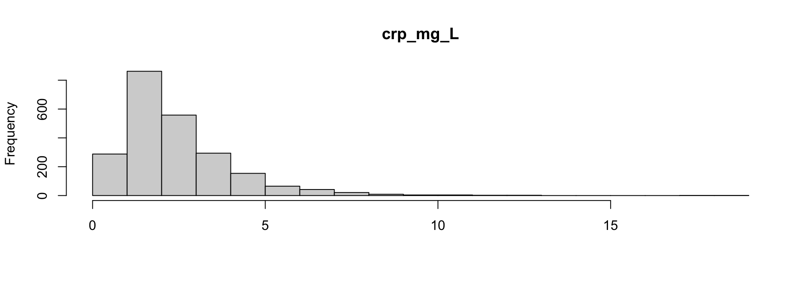
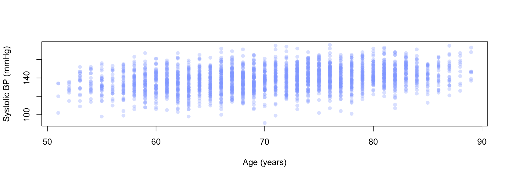

[1] 2400 12Exploratory Data Analysis in R
Gabriel Mateus Bernardo Harrington ![]()
Exploratory Data Analysis
Todays Aims
- Get to know a dataset before you do anything clever with it
- Choose the right summary for the shape of the data you actually have
- Find the problems before they reach your results
- Describe relationships between variables honestly
Learning Objectives
By the end of this session you should be able to:
- Classify a variable as continuous, binary, categorical or ordered
- Summarise each type appropriately, and justify the choice
- Recognise skew, outliers and missingness, and say what to do about them
- Produce and interpret a cross-tabulation and a correlation
What EDA actually is
Not a step you tick off. It’s the habit of looking at your data before you trust it.
- What is in here, and what type is each thing?
- What is the typical value, and how spread out is it?
- What is broken, missing, or impossible?
- What looks related to what?
Every statistical test you meet in sessions 9–14 assumes you have already done this. None of them will tell you if you haven’t.
The rule for this session
Look at the data. Then look again. Then compute something.
The expensive mistakes in data analysis are almost never “I used the wrong test”.
They are “I didn’t notice that column was a character”, or “I didn’t notice two rows were duplicated”, or — as you’ll see in about ten minutes — “I didn’t notice two values were ten times too big”.
Our dataset
A simulated cohort of 2,400 older adults in England: demographics, deprivation, lifestyle, and clinical measurements.
- It is entirely made up. No real patients.
- It is the same dataset you’ll use in the statistics sessions
- It is deliberately not clean, because real data never is
First contact
Before anything else — how big is it, and what is in it?
Rows: 2,400
Columns: 12
$ participant_id <chr> "BIO00001", "BIO00002", "BIO00003", "BIO00004", "BIO…
$ age_years <dbl> 68, 74, 77, 81, 83, 81, 67, 66, 66, 67, 84, 77, 79, …
$ sex_at_birth <chr> "female", "Male", "female", "female", "Male", "Femal…
$ imd_quintile <dbl> 3, 1, 4, 1, 1, 2, 2, 2, 4, 3, 1, 2, 9, 3, 3, 5, 5, 5…
$ smoking_status <chr> "Never", "Never", "Former", "Former", "Former", "For…
$ self_rated_health <chr> "Good", "Fair", "Very bad", "Fair", "Fair", "Very ba…
$ height_cm <dbl> 166.0, 172.5, 163.1, 158.6, 180.2, 163.6, 175.9, 150…
$ bmi_kg_m2 <dbl> 23.7, 28.7, 20.0, 24.1, 27.1, 28.1, 31.4, 25.1, 36.5…
$ systolic_bp_mmHg <dbl> 1330, 1620, 142, 136, 137, 155, 141, 147, 162, 150, …
$ crp_mg_L <dbl> 0.73, 1.02, 0.47, NA, 3.30, 1.72, 1.46, 0.67, 2.06, …
$ obesity <chr> "No", "No", "No", "No", "No", "No", "YES", "No", "Y"…
$ type2_diabetes <chr> "No", "No", "No", "No", "No", "No", "No", "No", "No"…What glimpse() just told you
<dbl>— a number (double). Age, BMI, blood pressure.<chr>— text. Sex, smoking status, self-rated health.- 2,400 rows, 12 columns
Note what is not there: nothing is a factor yet, and obesity is stored as a number even though it only takes two values.
R will happily let you take the mean of a 0/1 column, or sort text alphabetically when you meant “worst to best”. Knowing the type is how you avoid both.
Variable types
| Type | Looks like | Example here |
|---|---|---|
| Continuous | any value in a range | age_years, bmi_kg_m2 |
| Binary | exactly two outcomes | obesity, type2_diabetes |
| Categorical (nominal) | unordered groups | sex_at_birth, smoking_status |
| Ordered (ordinal) | groups with a rank | imd_quintile, self_rated_health |
Classify first, compute second. The type decides the summary, the plot, and later the test.
Practice!
Without running anything, classify each of these:
height_cmsex_at_birthself_rated_healthtype2_diabetesimd_quintile
Then check yourself with glimpse() — and notice where R’s storage type disagrees with the conceptual type.
Continuous variables
Central tendency
Two ways to say “the typical value”:
# A tibble: 1 × 2
mean median
<dbl> <dbl>
1 70.6 71Nearly identical — which tells you the distribution is roughly symmetric.
When they disagree, that disagreement is information.
Variability
“Typical” is useless without “how spread out”.
# A tibble: 1 × 3
sd IQR range
<dbl> <dbl> <dbl>
1 8.45 13 38- SD — average distance from the mean. Uses every value.
- IQR — width of the middle 50%. Ignores the tails.
- Range — max minus min. Entirely decided by two values.
Now do it for blood pressure
# A tibble: 1 × 7
n mean median sd IQR min max
<int> <dbl> <dbl> <dbl> <dbl> <dbl> <dbl>
1 2400 140. 139 40.8 17 91 1620Something here is wrong. What?
Spot it
- Mean 140, median 139 — fine, that is a plausible systolic blood pressure
- IQR 17 — fine
- SD 40.8 — for a variable whose middle 50% spans 17 mmHg?
- Max 1620 — no.
A standard deviation more than twice the IQR is a red flag on its own. You did not need the max to know something was wrong.
This is why you compute both a robust and a non-robust summary.
Look at it

The entire distribution is squashed against the left edge by two points.
Find it
# A tibble: 2 × 3
participant_id age_years systolic_bp_mmHg
<chr> <dbl> <dbl>
1 BIO00001 68 1330
2 BIO00002 74 16201330 and 1620. Those are 133.0 and 162.0 with a misplaced decimal point — a data entry error, and a very common one.
Fix it
# A tibble: 1 × 2
mean sd
<dbl> <dbl>
1 139. 12.6SD falls from 40.8 to 12.6. The mean barely moves.
Never silently delete a row. Record what you changed and why — that is what makes a pipeline reproducible, and it is marked.
Robust vs non-robust
Watch which summaries even noticed:
| with the error | after the fix | |
|---|---|---|
| mean | 140.0 | 138.9 |
| median | 139 | 139 |
| sd | 40.8 | 12.6 |
| IQR | 17 | 17 |
The median and IQR did not move at all. They are robust — built from ranks, so extreme values carry no extra weight.
That is the argument for reporting both. Where they disagree, look.
What it cost
Two bad cells out of 2,400. Here is the correlation between age and blood pressure, before and after:
raw cleaned
0.093 0.293 0.09 to 0.29. A real, moderate association was hidden entirely by two typos.
Had you skipped EDA you would have reported “no relationship between age and blood pressure” — confidently, and wrongly.
Practice!
Using cohort:
- Summarise
bmi_kg_m2with mean, median, SD and IQR. Do any disagree? - Find the minimum and maximum. Are both plausible for an adult?
- Produce a boxplot of
crp_mg_L. What do you notice?
Extra practice
- Write a small check that flags any column whose SD is more than twice its IQR
Skew
Compare two continuous variables:
# A tibble: 1 × 4
height_cm_mean height_cm_median crp_mg_L_mean crp_mg_L_median
<dbl> <dbl> <dbl> <dbl>
1 169. 168. 2.44 2.01Height: mean ≈ median. Symmetric.
CRP: mean above median. A long right tail is dragging the mean up.
Seeing skew


Which summary do you report?
- Symmetric — mean and SD are fine, and use all the data
- Skewed — median and IQR describe it far better
- Reporting a mean for a strongly skewed variable is not wrong, it is misleading, which is worse
You will meet this again in sessions 11–12: the same shape decides whether a parametric test is appropriate.
Break
Missing data
Where is it missing?
Two different kinds of missing
- Sporadic — a blood sample was not taken. A few percent, scattered.
- Structural — the value cannot exist for that person.
In the full dataset, age_at_death is missing for 91.6% of people. Not a data quality problem — those people did not die.
Treating those two the same way is a classic and expensive error. Always ask why a value is missing before deciding what to do with it.
NA will not warn you
The first is arguably the better behaviour — R is telling you something is missing. na.rm = TRUE says “I know, and I’ve decided to ignore them”.
Make sure that is actually a decision you made.
Categorical and binary variables
Counting
The whole toolkit for a categorical variable starts here:
# A tibble: 4 × 2
smoking_status n
<chr> <int>
1 Current 333
2 Currnt 4
3 Former 795
4 Never 1268Four categories for a three-category variable.
The levels are not clean
# A tibble: 8 × 2
self_rated_health n
<chr> <int>
1 Very bad 1094
2 Bad 533
3 Fair 384
4 Good 209
5 Very good 136
6 <NA> 42
7 Very Good 1
8 very good 1Very Good, Very good and very good are three spellings of one category. count() found them because it does not guess.
Why this matters
If you had gone straight to a test, Very good (136 people) and very good (1 person) would have been compared as different groups.
- Nothing errors
- The output has the right shape
- Your degrees of freedom are quietly wrong
Repairing these is a job for case_when() and forcats — session 5, and the factors reference page.
Binary variables
obesity has two possible values, so its summary is just a proportion. Let’s take the mean:
NA — because it is text, not 0/1. glimpse() told us that earlier: <chr>.
Note that it did not error. You get NA, a warning you can easily scroll past, and a pipeline that carries on.
And it is not even clean
Four values for a two-value variable. Y and YES are one person each.
If you had filtered on obesity == "Yes" you would have silently dropped two people. No error, no warning.
Clean, then summarise
Now the proportion
# A tibble: 1 × 3
n n_obese prevalence
<int> <int> <dbl>
1 2400 810 0.338mean() of a TRUE/FALSE column is the proportion — TRUE counts as 1.
33.8%. Which you could only compute after knowing the type and fixing the levels. That is the entire argument for this session in one slide.
Practice!
Using cohort:
- How many people are in each
imd_quintile? Is any level unexpected? - What proportion have
type2_diabetes? - Count
sex_at_birth. Does anything need cleaning?
Extra practice
- Write one pipeline that returns the number of distinct values of every character column, and use it to spot which need attention
Relationships between variables
Cross-tabulation
Two categorical variables at once:
# A tibble: 3 × 3
sex_at_birth obese_FALSE obese_TRUE
<chr> <int> <int>
1 Female 811 383
2 Male 776 427
3 female 3 NACounts alone are hard to compare when the groups are different sizes.
Proportions within groups
# A tibble: 3 × 3
sex_at_birth n obesity_prevalence
<chr> <int> <dbl>
1 Male 1203 0.355
2 Female 1194 0.321
3 female 3 0 Now the comparison is fair — and look at the third row. The three female records are being reported as a separate group with 0% prevalence.
One uncleaned capital letter has invented a third sex category with an eye-catching and completely meaningless result.
Always ask which way the percentages run. “60% of obese people are female” and “60% of females are obese” are completely different claims.
Correlation
For two continuous variables:
Pearson’s r runs from −1 to +1:
- sign — direction. Positive: both rise together.
- magnitude — strength. 0 is no linear relationship.
0.29 is a moderate positive association. Older people tend to have higher blood pressure — but the relationship is loose.
Correlation with missing values
NA, because some CRP values are missing.
use = "complete.obs" drops incomplete pairs. As ever — that is a decision, so know that you made it.
What correlation does not tell you
- It does not imply causation
- It only measures a straight-line relationship
- It is badly distorted by outliers — as you saw, 0.09 vs 0.29
- A significant correlation can still be a tiny one
On 2,400 people, r = 0.09 is statistically significant. It is also almost completely useless for predicting anything.
Always plot it before you believe it.
Plot it

A real trend, and a lot of scatter. That is what r = 0.29 looks like.
Practice!
Using cohort_clean:
- Correlate
bmi_kg_m2withsystolic_bp_mmHg. Plot it. Does the number match what you see? - Compare mean
bmi_kg_m2acrosssmoking_statusgroups - Cross-tabulate
imd_quintileagainsttype2_diabetesas proportions
Extra practice
- Find the pair of continuous variables in the full dataset with the strongest correlation. Is it interesting, or just two versions of the same measurement?
An EDA checklist
Before any test, on any dataset:
dim()andglimpse()— size and types- Classify each variable you plan to use
- Summarise continuous variables both ways — mean/SD and median/IQR
count()every categorical variable, and read the levels- Count the missing values, and ask why they are missing
- Plot anything you intend to claim a relationship about
It takes ten minutes and it is the difference between an analysis you can defend and one you cannot.
Additional Resources
- R for Data Science 2e — Exploratory Data Analysis
skimr— fast, readable summaries of a whole data framenaniar— tools for exploring missing data- Next session: doing all of this properly, with
ggplot2

Data for Life Sciences 1 - Slides and code available here